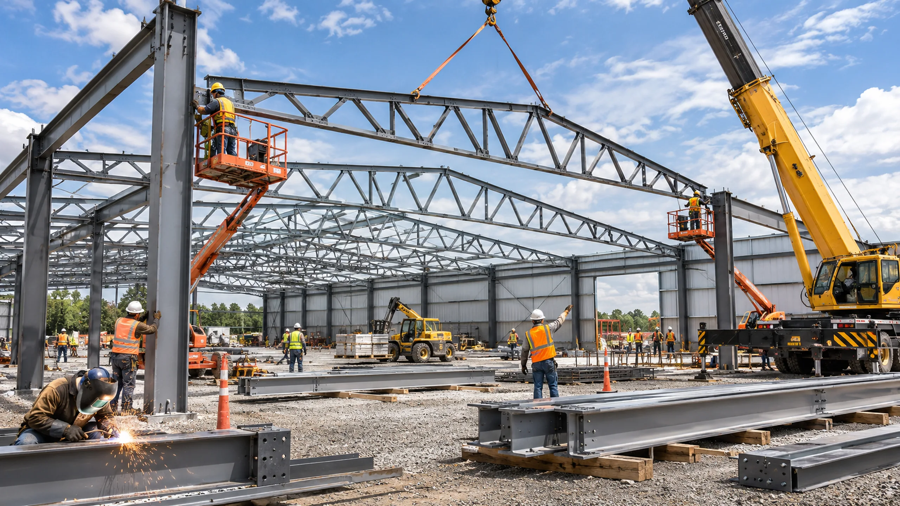
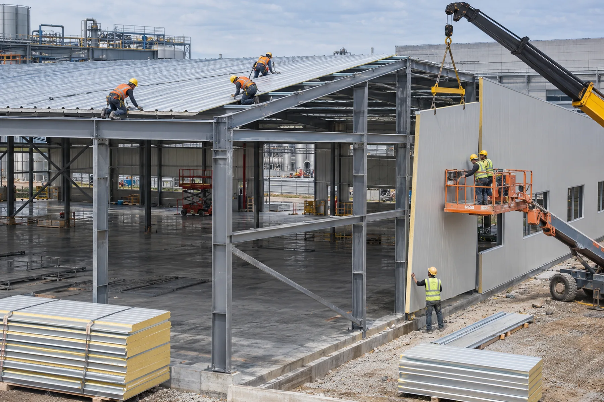

Монтаж металлокаркаса
Сборка несущей системы для будущего здания.

Склады, производственные и сервисные корпуса. Конструкцию, инженерную часть и этапность определяем под назначение здания и параметры участка.
Что входит в направление
Три ключевых этапа строительства: несущие конструкции, ограждающий контур и готовый корпус под задачи производства или логистики.
Сборка несущей системы для будущего здания.

Формирование защищённого контура здания.

Здание с учётом технологии, инженерии и логистики.
Подход к реализации
Технология подбирается после проверки исходных условий, а не по одной типовой фотографии.
Понятный порядок работы
Получаем назначение объекта, площадь и параметры участка.
Обсуждаем конструктив, инженерные решения и состав команды.
Фиксируем перечень работ, этапы и ориентиры стоимости по заданию.
Направь параметры здания — обсудим варианты реализации и дальнейшие шаги.